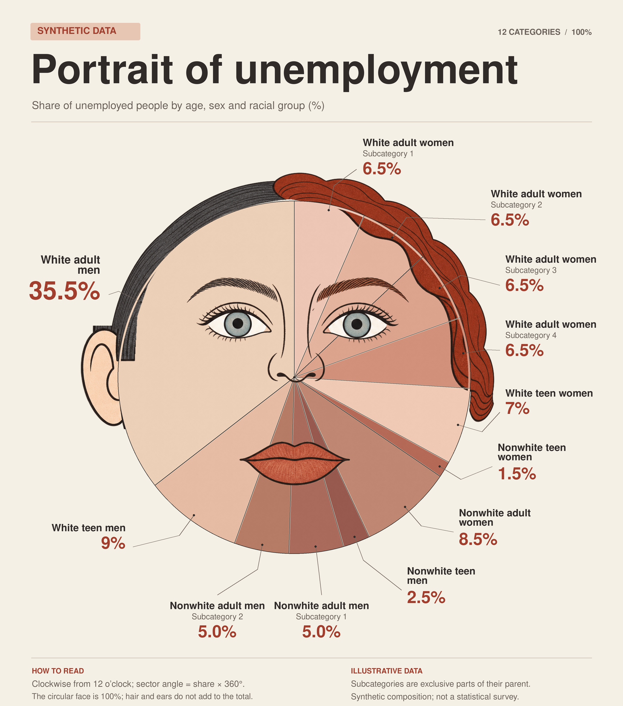
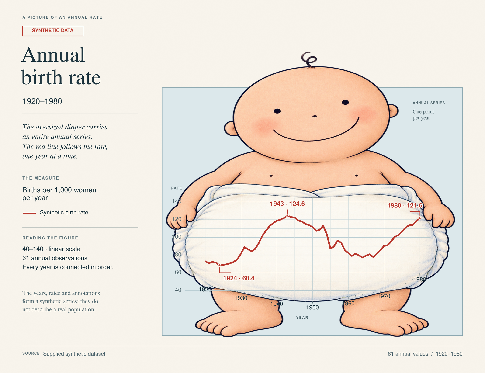
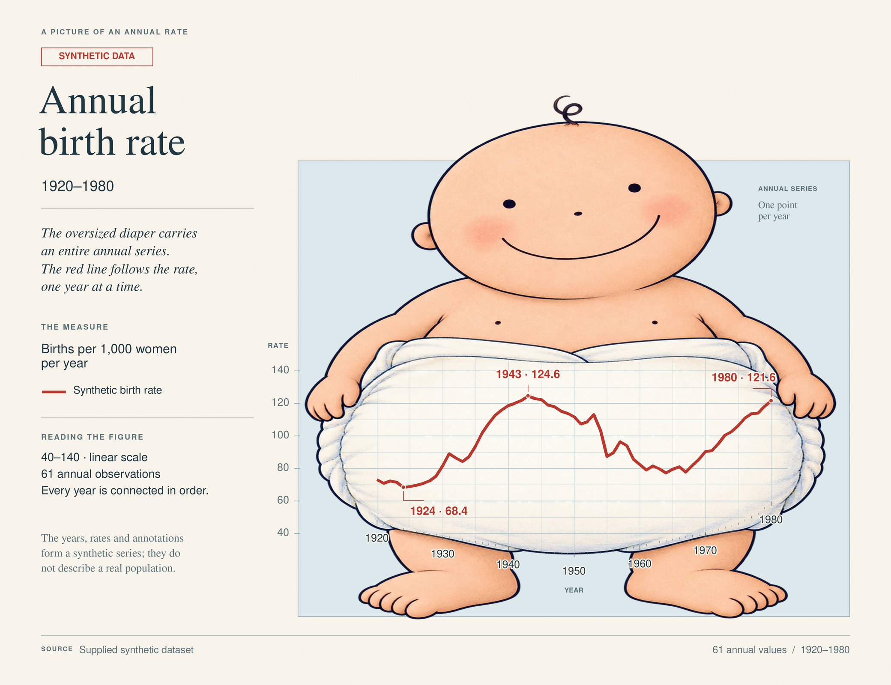
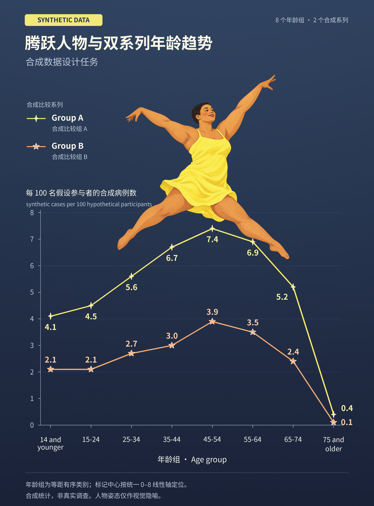
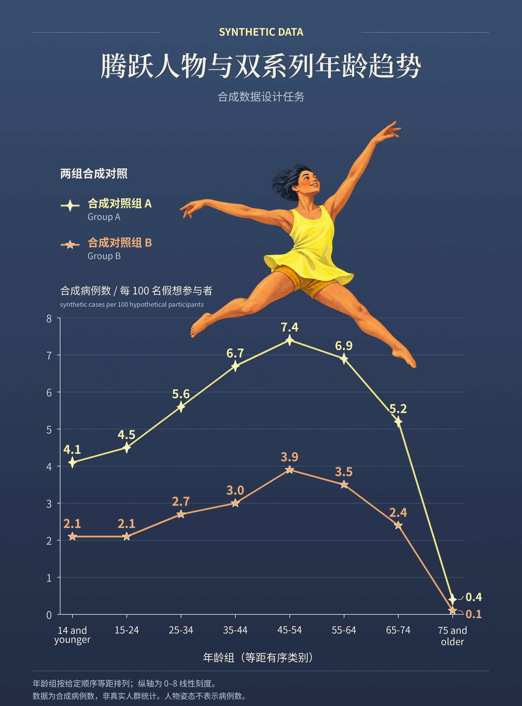

历史原流程（仅作参照）
日志确认曾传原参考图

已保存并通过schema.json验证的review.json。12项数值和标签绑定正确，独立像素测量最大偏差约0.03个百分点；人脸与数据扇区实质融合，未发现必要要求的可见缺陷。未运行submit.py。
执行中，结果陆续更新
比较同一冲突数据下的两次新生成：原流程自主决定是否传参考图，与禁止向生图工具传原参考图。两组智能体都可以查看原图并写文字提示；共3个案例、6次新生成，旧图只作额外参照。
GPT-6-Astra / max；每次最多3次生图、6次完整渲染、35分钟；评审每次15分钟，生成与全部评审共用最多3个会话。首轮为首次完整渲染尝试，最终为最后有效图。数值与几何容差、结构、意义、小值可辨指标沿用120组详细评估；6张可用最终图均安排第二次匿名评审。
本次固定选取历史上确有传参考图记录的E04、E35、E95，覆盖类别数和趋势形状。只有3组，每条件一次生成，不代表120组总体。若新原流程自行不传图，会如实记录；此时不能将该配对解读为实际图像输入的有无对比。技术异常不计为图像失败，亦不重采样掩盖。
更新时间（北京时间）：2026-10-16 09:00:49
生成：执行中2、待执行3、已完成1；独立评估：待执行2；最终第二评估：待执行1
冻结实验方案 · 完整统计与评审JSON · 原120组实验
每组分母固定为3。执行中的“已判通过”不是最终通过率；未评、技术失败及非pass均不算通过，评估完成数量同时显示。旧图不计入下表。
| 轮次／指标 | 原流程自主传图 | 禁止传原参考图 |
|---|---|---|
| 首轮 · 数值支持 | 0/3 已判通过；已评0/3 | 0/3 已判通过；已评0/3 |
| 首轮 · 关键结构 | 0/3 已判通过；已评0/3 | 0/3 已判通过；已评0/3 |
| 首轮 · 当前主题意义 | 0/3 已判通过；已评0/3 | 0/3 已判通过；已评0/3 |
| 首轮 · 参考原意 | 0/3 已判通过；已评0/3 | 0/3 已判通过；已评0/3 |
| 首轮 · 小值可辨 | 0/3 已判通过；已评0/3 | 0/3 已判通过；已评0/3 |
| 首轮 · 共同主判据 | 0/3 已判通过；已评0/3 | 0/3 已判通过；已评0/3 |
| 首轮 · 主判据＋小值可辨 | 0/3 已判通过；已评0/3 | 0/3 已判通过；已评0/3 |
| 最终 · 数值支持 | 0/3 已判通过；已评0/3 | 0/3 已判通过；已评0/3 |
| 最终 · 关键结构 | 0/3 已判通过；已评0/3 | 0/3 已判通过；已评0/3 |
| 最终 · 当前主题意义 | 0/3 已判通过；已评0/3 | 0/3 已判通过；已评0/3 |
| 最终 · 参考原意 | 0/3 已判通过；已评0/3 | 0/3 已判通过；已评0/3 |
| 最终 · 小值可辨 | 0/3 已判通过；已评0/3 | 0/3 已判通过；已评0/3 |
| 最终 · 共同主判据 | 0/3 已判通过；已评0/3 | 0/3 已判通过；已评0/3 |
| 最终 · 主判据＋小值可辨 | 0/3 已判通过；已评0/3 | 0/3 已判通过；已评0/3 |
原案例E04 · 同一冲突数据 · 类别数

日志确认曾传原参考图
已保存并通过schema.json验证的review.json。12项数值和标签绑定正确，独立像素测量最大偏差约0.03个百分点；人脸与数据扇区实质融合，未发现必要要求的可见缺陷。未运行submit.py。
生成：执行中
实际传图：待执行；原参考图输入：待核验
{
"status": "pending"
}
生成：待执行
实际传图：待执行；原参考图输入：待核验
{
"status": "pending"
}原案例E35 · 同一冲突数据 · 趋势形状

日志确认曾传原参考图

未发现违反冻结要求的可见缺陷。已保存 review.json 并通过 schema.json 校验；按后续指令未运行 submit.py。
生成：已完成
实际传图：已核验；原参考图输入：已传入
{
"status": "verified",
"original_reference_used": true,
"image_call_count": 1,
"completed_image_calls": 1,
"submitted_call_expressions": 1,
"image_input_kinds": [
"original_reference"
],
"unknown": [],
"violations": [],
"reference_viewed_by_planning_agent": true
}

暂无有效评估，缺图与技术异常单列。
离线代码复现像素一致：True
暂无有效评估，缺图与技术异常单列。
离线代码复现像素一致：True
生成：待执行
实际传图：待执行；原参考图输入：待核验
{
"status": "pending"
}原案例E95 · 同一冲突数据 · 趋势形状
日志确认曾传原参考图

全部类别、系列及16个数值完整，标记中心符合共同0–8线性轴。腾跃人物、两条折线及两类标记保留，素材显著可见。当前合成主题、单位和比较组身份清晰，未见实质违约。review.json已保存并通过schema校验，未运行submit.py。
生成：待执行
实际传图：待执行；原参考图输入：待核验
{
"status": "pending"
}生成：执行中
实际传图：待执行；原参考图输入：待核验
{
"status": "pending"
}